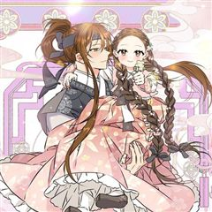
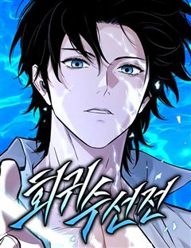
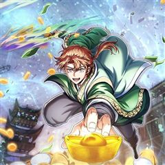

무협 회귀·환생·이세계 웹툰 추천 TOP 30
무협 작품 중에서 회귀, 빙의, 환생, 이세계 같은 요소가 들어간 작품만 골랐어요. 네이버웹툰·카카오웹툰·레진코믹스에서 조건에 맞는 작품 61개 중 인기 순으로 30개를 골랐어요. 인기 TOP 3: 화산귀환, 무당기협, 광마회귀
2026-10-07 기준 · 성인 작품 제외
내 취향으로 더 좁혀서 추천받기 →-
1
 네이버웹툰
네이버웹툰화산귀환
대 화산파 13대 제자.천하삼대검수 매화검존 청명. 천하를 혼란에 빠뜨린 고금제일마 천마의 목을 치고 십만대산의 정상에서 영면. 백 년의 시간을 뛰어넘어 아이의 몸으로 다시 살아나다. ......뭐? 화산이 망해? 이게 뭔 개소리야!?
무협회귀이세계명작개그네이버웹툰에서 보기 → -
2
 카카오웹툰
카카오웹툰무당기협
무림 사파의 수장인 혁련무강은 죽기 직전 불로초를 삼킨 후 눈을 떠보니 무당파 도동의 몸에 빙의되었다. 예전에 본인이 붕괴 직전까지 몰고 갔던 무당파에서 '진무'라는 이름의 도사로 다시 살게 된 그는 무당의 '양의신공'을 전수받기 위해 애쓰다 보니 뜻하지 않게 무당이 부흥하는데...!
무협빙의사이다액션카카오웹툰에서 보기 → -
3
 네이버웹툰
네이버웹툰광마회귀
무공에 미친 광마 이자하. 그는 마교 교주의 천옥을 훔쳐 쫓기던 중 벼랑에서 떨어지게 된다. 모든 게 끝났다고 생각한 순간 눈을 떠보니, 사람들에게 무시당하던 점소이 시절로 돌아와 있는데... 게다가 억울한 누명으로 두들겨 맞고 객잔은 박살이 나 있는 상황. 점소이 시절로 회귀한 광…
무협회귀사이다세계관판무네이버웹툰에서 보기 → -
4
 네이버웹툰
네이버웹툰절대회귀
"나를 과거로 보내주시오." 이 시대에서 그를 죽일 수 없다면, 과거로 돌아가면 되리라. 시간을 거스를 수 있는 '회귀대법(回歸大法)'으로 그토록 원하던 과거로 회귀한 한 남자. 가족도, 친구도, 삶도, 모두 잃었던 '검무극(劍無極)'의 복수를 위한 첫걸음이 시작된다.
무협회귀타임슬립참교육미친작화네이버웹툰에서 보기 → -
5
 네이버웹툰
네이버웹툰마도전생기
정파무림 의천맹의 최강 살수, 천하진. 자유를 찾기 위해 탈출을 감행하지만 코앞에서 목숨을 잃고 만다. 그런데… '신교불패, 만마앙복. 삼공자님의 쾌유를 경하드리옵니다!' 무림의 공적, 마교의 삼공자로 전생해버렸다?! 정파무림 최강 비밀병기 천하진의 마도무림 정복기.
무협회귀전쟁악역이주인공액션네이버웹툰에서 보기 → -
6
 네이버웹툰
네이버웹툰천마육성
마교의 태왕각주 ‘사마귀’의 명령으로 화산파 출몰 지역으로 파견나간 비객조. ‘설휘’는 화산파의 절대고수 ‘구종명’에게 죽임을 당할 위기에 처한다. 그때 눈 앞에 상태창이 나타나고 정찰 임무를 받기 직전으로 회귀하게 된다. 설휘는 자신이 전생에서 죽임을 당했던 똑같은 임무를 받게 되자…
무협회귀자극적인시리어스동양네이버웹툰에서 보기 → -
7
 카카오웹툰
카카오웹툰의원, 다시 살다
해외 의료 봉사를 갔다가 내전에 휘말렸다. 환자 대신 반군의 총을 맞고 간신히 눈을 떴는데 아니, 어린아이가 됐잖아?!? 눈앞에 있는 건 부서진 마차와 특이한 복식의 쓰러진 사람들! "꼭 무림 세계 같네." 한 명이라도 살리기 위해 응급처치를 하던 중, 이곳이 즐겨 읽던 무협 소설,…
무협빙의힐링액션카카오웹툰에서 보기 → -
8
 네이버웹툰
네이버웹툰절대검감
단전이 부숴졌다는 이유로 집에서는 내놓은 자식 취급을 받던 소운휘는 혈교에 납치되어서도 삼류 첩자로 살아왔다. 어느 날, 전설로만 알려진 검선비록을 찾는데 이용당하다 죽은 운휘는 10년 전, 혈교에 납치되던 그 날로 돌아가게 되고 검의 목소리를 듣는 신비한 능력을 얻는다.
무협회귀환골탈태동양이능력네이버웹툰에서 보기 → -
9

카카오웹툰말단 후궁의 딸로 태어났습니다
눈 떠보니 옹주였다. 교통사고를 당하고 눈을 떠보니 사극 같은 세계 속의 아기 옹주가 되어 있던 시아. 다행히 왕실에서 태어나 먹고살 걱정은 없겠다고 생각했던 것도 잠시, 비어있는 중전 자리를 차지하기 위한 궁중암투가 시아를 덮쳐온다! “빼애애앵!! (나를 엄마와 함께 조용히 살게 내…
무협환생사이다카카오웹툰에서 보기 → -
10
 네이버웹툰
네이버웹툰환생천마
철혈의 맹주, 강호의 절대자 '천하진'. 가문의 수치라 불리는 망나니 '벽리단'의 몸으로 깨어나다! 취미는 사기도박, 검은 창고에 박아둔지 오래. 하루아침에 천하제일인에서 천하의 쓰레기가 된 그는 다시 검을 잡고, 전생에서 이루지 못한 경지에 오르고자 한다.
무협환생환골탈태사이다천마네이버웹툰에서 보기 → -
11
 네이버웹툰
네이버웹툰권왕환생
주먹 하나로 무림을 누빈 남자 단우성. 갑작스레 마도에게 죽음을 맞이하고, 돈 많은 은하상단의 대공자의 몸에서 다시 눈을 뜨다. “나는 은원에서 자유롭길 바라지 않아. 은혜가 있으면 갚고, 원한이 있어도 갚아줘야지.” 가진 것이라고는 돈밖에 없는 대공자 몸이지만, 압도적인 재력과 전생…
무협환생사이다액션세계관네이버웹툰에서 보기 → -
12
 네이버웹툰
네이버웹툰모든걸 기억하는 천재무사
모든걸 기억하는 삼류무사 진소운. 30년 전 마교가 재림하기 전으로 회귀하다. 과거로 돌아온 사실이, 딱히 날더러 세상을 구하라는 신호로는 보이진 않는다. ‘그랬다면 최소한 뭔가 특별한 능력을 주거나 장삼봉 조사의 영혼 같은 거라도 붙여줘야 했을 테니까?’ 답 없는 삼류 문파인 사문.…
무협회귀레드아이스 스튜디오액션판타지소년물네이버웹툰에서 보기 → -
13카카오웹툰
마존현세강림기
첫 번째 삶. 불의의 사고로 가족과 두 다리를 잃고 스스로 목숨을 끊었다. 두 번째 삶. 중원에서 적천마존이라는 명성을 얻었지만 가장 신뢰하던 이에게 배신당해 죽게 됐다. 그리고 맞게 된 세 번째 삶. 다시 돌아온 현대에서 강진호 자신은 평범한 삶을 살 거라 다짐하지만... 평범한 인…
무협회귀사이다개그학원물카카오웹툰에서 보기 → -
14
 네이버웹툰
네이버웹툰파브르 in 사천당가
독물과 독충을 다루던 백만 스트리머 매운 파브르. 아프리카 현지촬영중 블랙맘바에 물려 무림에 전생하게 된다. 정글에서 자신이 좋아하는 독물들을 키우며 자연인 생활을 하던 주인공은 독공을 사용하는 사천당가의 눈에 띄게 된다. "자네. 우리 식구(食口)가 되게!"
무협빙의동양액션판타지네이버웹툰에서 보기 → -
15
 네이버웹툰
네이버웹툰천마는 조용히 살고싶다
'다음 생에는 반대로 살아보고 싶구나...' 오직 공포와 경외만이 전부였던 천마는 죽음의 순간 '증혼마공'을 제대로 익힐 수 있는 실마리를 얻는다. '증혼마공'은 타인의 혼백을 탐하기만 하는 게 아니었다. 그렇게 천마는 언제 죽을지 모르는 공자 벽태산의 몸으로 깨어나는데... 살기 위…
무협빙의환생천마동양네이버웹툰에서 보기 → -
16
 카카오웹툰
카카오웹툰월령검제
"개 같은 인생이었네… 정말로." 암투가 판치는 마교에서 살아남아 천마의 제자가 됐건만, 결국 사형에게 배신당해 죽음을 맞이한 연소운. 그런데, 눈을 떠보니 마교에 끌려가기 전인 꼬맹이 시절이다?! 지옥 같은 마교의 삶을 반복하기 싫었던 연소운은 새로운 인생을 설계한다. 마교에 복수하…
무협회귀사이다액션카카오웹툰에서 보기 → -
17
 네이버웹툰
네이버웹툰천하제일 대사형
잔혹했던 정사대전에 반 강제적으로 끌려갔던 대사형 ‘혁무상’. 수많은 피가 흐른 전쟁에 참전한지 7년. 전쟁은 진즉 끝났음에도 돌아오지 않아 죽은 줄 알았다. 간신히 고향 땅을 밟은 혁무상이 보게 된 것은, 고작 삼류 흑도에게 핍박당해 무너져가는 고향 용호무관의 모습. 분노에 찬 혁무…
무협환골탈태사이다참교육판무네이버웹툰에서 보기 → -
18
 네이버웹툰
네이버웹툰황제의 검
정난의 변에서 간신히 살아난 주윤문, 마교 천하제일 천마(天魔)와 소림사 육조 혜능(慧能)을 몸 안에 받아 천마서생 '파천'으로 재탄생하게 되는데… 절대지존을 향한 파천의 새로운 이야기가 시작된다!
무협이세계서양동양신화네이버웹툰에서 보기 → -
19카카오웹툰
지옥에서 돌아온 성좌님
성좌들이 노리는 땅, 지구. 헌터 최연승은 지구를 독식하려는 성좌들을 막아내고자 특별 수련에 돌입하기로 한다. 수련 장소는 시간이 무한히 느리게 흐르는 공간 어비스. 허나 최연승은 갑자기 마력폭풍에 휘말리고... 급기야 거친 어비스를 정면으로 마주하게 되는데. 어비스 곳곳에서 전례없이…
무협차원이동학원물카카오웹툰에서 보기 → -
20
 카카오웹툰
카카오웹툰몰락 세가의 시한부 영약
7년 만에 깨어난 단목세가의 장손 단목련. 자신의 죽음 이후까지 보고 돌아온 그녀 앞에 갑자기 이상한 문구가 보이기 시작한다. [영기를 50 이하로 유지하세요. 이 상태로 두 달 이상 지속될 시 사망에 이르게 됩니다.] 내공을 쌓을 수 없는 그녀는 몸에 비축되는 영기를 어떻게든 발산해…
무협회귀힐링로판카카오웹툰에서 보기 → -
21
 카카오웹툰
카카오웹툰천검기협
무림의 환란을 막기 위해 초절정고수에서 초고도비만으로 타임슬립+빙의한 개망나니 진위강, 아니 유현. 환란의 원흉인 '환란의 주구'를 찾아내 숨통을 끊어 놓아야 하거늘 사랑 듬뿍 받고 자라 걷지도 못할 만큼 육중해진 몸에 빙의한 덕에 제 숨통 유지가 만만치 않은 지경이다. 더 큰 문제는…
무협빙의개그사이다액션카카오웹툰에서 보기 → -
22
 카카오웹툰
카카오웹툰창천무신
"이 기생오라비처럼 생긴 놈은 뭐지?" 천하제일로 군림하던 최강의 무인! 나, 독패 하후영. 나를 상대할 자는 무림 어디에도 존재하지 않는다! 더는 지상에서 이룰 성취가 없자 허무와 공허가 나를 잠식했다. 무의 끝, 극의를 이루기 위해서는 신선이 될 수밖에! "마침내 성공했다아아아!!…
무협환생개그사이다액션카카오웹툰에서 보기 → -
23
 네이버웹툰
네이버웹툰짜장 한 그릇에 제갈세가 데릴사위
짜장면 한 그릇으로 전 무림을 평정할 수 있을 것 같다? 최고의 중식 요리사를 꿈꿨지만 중국 송나라 시대로 보내져버린 주인공! 하지만 깨어난 몸에 무공은 전혀 없고, 남은 거라곤 전생에서 익힌 요리 기술들뿐. 그런데 이 요리들... 반응이 매우 좋다! 이번 생에는 과연 짜장면으로 중원…
무협환생하렘병맛가벼운네이버웹툰에서 보기 → -
24
 네이버웹툰
네이버웹툰천재 무림 트레이너
대 역병 시대, 운영하던 헬스장이 망했다. 어떻게든 먹고 살아보려던 찰나 읽고 있던 무협지에 빙의했다. 도착해보니 천년 소림이라 좋아했는데, 이건 뭐? 다들 잘못된 지식과 운동법으로 몸이 다 망가져 있잖아?! 헬스 트레이너였던 내가 이걸 어떻게 참아! 현대의 지식과 운동법으로 사형들을…
무협빙의동양가벼운무협/사극네이버웹툰에서 보기 → -
25
 카카오웹툰
카카오웹툰은해상단 막내아들
『은해상단 막내아들』 천하제일의 상재(商才)를 타고난 은서호. “어째서 무림맹이 나를…….” “맹의 윗분들께서 자네가 거슬린다고 하더군. 쯧, 그놈의 돈이 뭐라고.” 백도 무림을 자처하던 무림맹의 칼에 살해당한 나는 상단 일을 처음 배우던 날로 돌아왔고, 굳게 다짐한다. 이번 생에서는…
무협회귀사이다눈물샘자극액션카카오웹툰에서 보기 → -
26
 카카오웹툰
카카오웹툰검은머리 미군 대원수
1910년대로 회귀한 인생 2회차 김유진, 미래 지식으로 역사를 휘어잡다. 언덕을 굴러 내려오는 레토나로부터 아이를 구하려다 죽음을 맞이한 한국인 중대장. 정신을 차려 보니 미래 지식을 가진 채 1900년대 재미 조선인 김유진으로 회귀하고 말았다. 미래를 아는 자, 재벌이 될 것인가,…
무협환생사이다개그액션카카오웹툰에서 보기 → -
27
 카카오웹툰
카카오웹툰환생마신전
소천마(少天魔) 연운휘(燕雲輝). 이능만으로 천마신교 소교주가 된 존재. 파란만장하던 그가 부교주와 장로들의 반란에 직면한다. [ 날 죽일 때 죽이더라도 내가 어떤 놈인지는 떠올려야 하셨소,사숙. 그러니까 다 뒈져라! ] 반란자들과 함께 장렬히 산화하고 생각지도 못한 곳에서 눈을 뜨게…
무협환생사이다액션카카오웹툰에서 보기 → -
28

네이버웹툰회귀수선전
아무 재능도 없이, 긴 세월 밑바닥에서 고통받은 끝에 맞은 죽음. 그것이 나의 첫 번째 삶이자, 끝없는 회귀의 시작이었다.
무협회귀선협무협/사극먼치킨네이버웹툰에서 보기 → -
29

카카오웹툰남궁세가 막내공자
남궁세가의 막내공자, 남궁대소! 소가주 경합에서 단전을 잃고 어이없는 죽음을 맞이해 과거로 회귀하는데... 천하제일세가의 막내 공자? 이딴 거 살아가는데 거추장스럽기만 했다. 패도 따윈 개나 줘버리라지! 머저리 같은 남궁, 무림 폐품 막내공자는 떠납니다!
무협환생액션카카오웹툰에서 보기 → -
30
 네이버웹툰
네이버웹툰천씨세가의 망나니가 되었다
천씨세가의 대공자, 천무량을 평생 호위하며 충성을 다한 한 무사, 무명(無名) 하지만 천무량에게 배신당해 생을 마감한다. 그러나 다시 눈을 뜬 그는 자신을 죽인 천씨세가의 망나니 대공자, 천무량이 되어 있었다. 과거의 기억과 무공, 냉정한 판단력을 지닌 그는 망나니의 가면을 쓰고 가문…
무협회귀액션판타지액션무협/사극네이버웹툰에서 보기 →